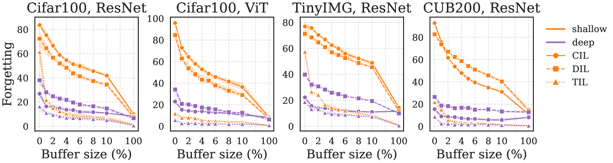
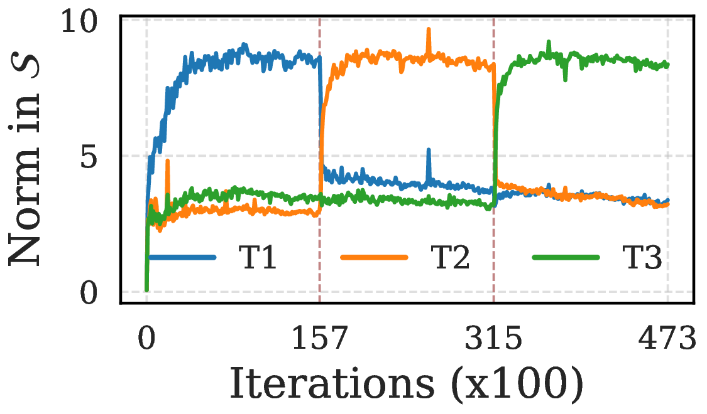
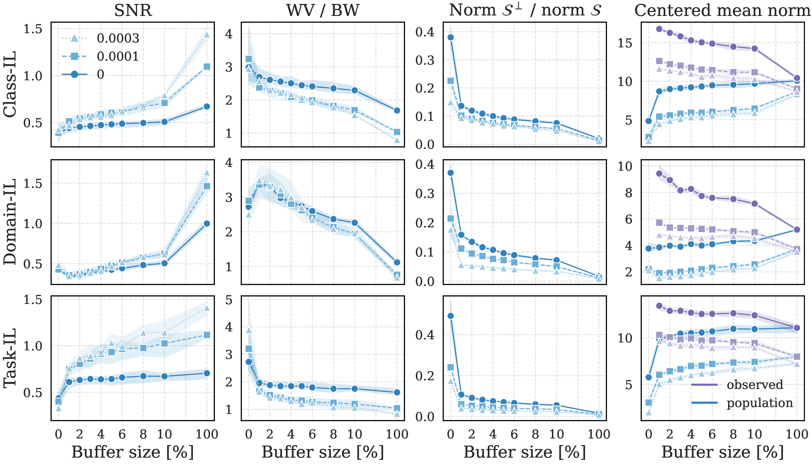
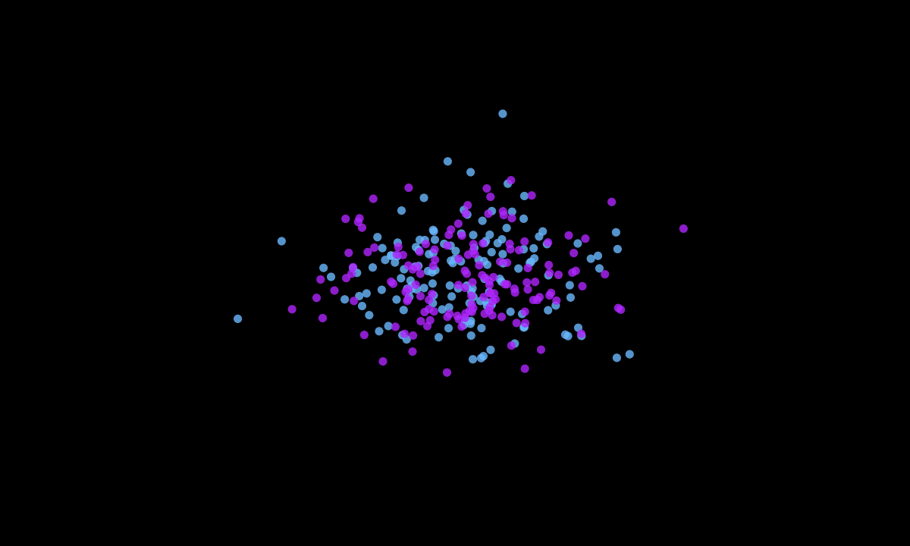
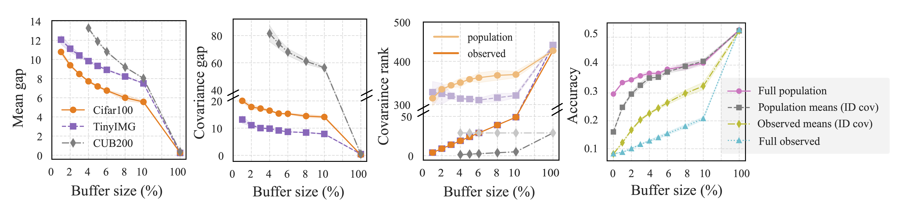

Train on sequence of tasks without forgetting
Learn new tasks sequentially
Store samples from past tasks in buffer
Cost: Scales with buffer size
Networks retain more information in representations than in predictions

Forgetting decays at different rates in feature space vs. classifier head across buffer sizes
Our contribution: First to extend NC formulation to continual learning
(all 3 setups: DIL, TIL, CIL)
Focus: Linear separability → characterize class mean & covariance
Neural Collapse emergence:
● Class 1 ● Class 2 ● Class 3
Animation: Features collapse from chaos to simplex ETF (Papyan et al., 2020)
This is the foundation for understanding what happens to old data representations
Forgotten samples behave as OOD data
Related work:
Ammar et al. (2024): NC5 property
Haas et al. (2023): L2 regularization & OOD
Kang et al. (2024): OOD collapse to origin

Past-task features project to zero in \(S\)
Buffer-OOD Mixture Model: Features interpolate between two extremes

NC emerges consistently across tasks with replay
Old task representations drift into \(S^\perp\)
Exponential decay with weight decay
Representations anchored in \(S\)
Buffer provides foothold in active subspace
If features are separable, why do classifiers fail?

Animation: Features remain separable, but classifier boundaries misalign with small buffers
Buffer covariance \(\hat{\Sigma}\) is rank-deficient, blind to variance in \(S^\perp\)
Rank gap persists until buffer ≈ 100%
Buffer means exhibit inflated norms due to repulsive forces
\(\|\hat{\mu}_c\| > \|\mu_c\|\) for small buffers

Gap between population and buffer statistics persists across buffer sizes
Thank you!